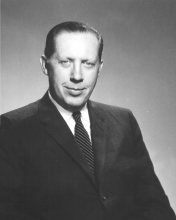

Please note: the AAS Obituaries are temporarily being hosted on this website while their full content is being ingested into the PubPub publishing platform newly adopted by the Bulletin of the American Astronomical Society. When the migration is complete, your existing links will take you to the final, migrated content. Contact peter.williams@aas.org with any questions.
John Hibbett DeWitt, Jr. (1906-1999)
On Monday, January 25, 1999, the world lost a pioneering astronomer, John H. (Jack) DeWitt, Jr. He died at his home in Nashville, Tennessee, at the age of 92. He was a Nashvillian from beginning to end, having been born there on February 20, 1906. Many have described Jack as a boy genius, a visionary, a pioneer, and a war hero. He was indeed many things during his lifetime, and a more detailed biography appeared in 1988, in issue No. 31 of the I.A.P.P.P. Communications.
In 1922, at the age of 16, DeWitt built the first radio transmitting tower in Nashville and, later that same year, Nashville's first commercial broadcasting station. For more than two decades, 1947-1968, he was president of WSM-AM and -FM radio and -TV (home of the Grand Ole Opry). During that tenure he supervised installation of WSM's 878-foot-tall, 50,000 watt transmitting tower, for many years the tallest in North America; and he made WSM the first TV station in the country to broadcast near-real-time weather satellite photos.
During World War II, Jack worked at Bell Laboratories and Evans Signal Laboratory, becoming director of Evans in 1943. He received the Legion of Merit for his contributions to the invention of the radar proximity fuse, the accomplishment of which he said he was proudest. Most astronomers, however, remember him best for Project Diana, bouncing a radar signal off the moon in 1946. He thus became the "Father of Radar Astronomy," and was made a life fellow of the Institute of Electrical and Electronic Engineers for this and other achievements in radio broadcasting.
Jack the astronomer emerged in 1934, when he and his brother, Ward, built a 12-inch Cassegrain telescope, complete with 12-foot dome, grinding the mirror themselves. Following completion of Project Diana, Jack returned to Nashville in 1947, arriving at almost the same time as Carl Keenan Seyfert (of Seyfert galaxies), the new professor of astronomy at Vanderbilt University. The two became fast friends. Almost immediately, Jack offered Carl the use of his 12-inch (by then located under dark skies near the 878-foot radio tower) and constructed a dry-ice refrigerated photoelectric photometer and associated electronics for use on it. Several Vanderbilt graduate students earned Masters degrees for work with that photometer in the late 1940s and early 1950s, representing the first photoelectric photometry carried out in the South of the United States.
Meanwhile, Jack was introducing Carl to influential people in Nashville, who soon became inspired by Carl's enthusiastic love of astronomy. It also helped that Jack made Carl the first TV weatherman in Nashville. The culmination was the Arthur J. Dyer Observatory, with its excellent and versatile 24-inch reflecting telescope and the beginnings of its splendid astronomy library, dedicated in 1983 to the 82 individuals and businesses from middle Tennessee who had made it possible.
After Carl Seyfert's untimely death in an automobile accident in 1960, Jack continued his close involvement with Dyer Observatory, under its second director, Robert Howie Hardie. In 1970, Jack donated his 12-inch telescope to Vanderbilt and oversaw its installation at Dyer, where it was formally dedicated in 1983, on the occasion of the Observatory's 30th anniversary. Later Jack himself, by then in his 80s, motorized the dome slit. The telescope and its dome have since been completely refurbished and are still enjoyed by Nashvillians of all ages during Dyer's open house viewing nights.
Jack's love of and commitment to astronomy were evident in his hometown newspaper obituary, which closed with the request that "memorials be made to the Arthur J. Dyer Observatory. " In return, Dyer has established a fund to support the DeWitt Public Lecture in Astronomy, in Jack's memory.
Photo courtesy of Dyer Observatory, Vanderbilt University
Obituary written by: Douglas S. Hall (Vanderbilt University and Arthur J. Dyer Observatory)
BAAS Citation: BAAS, 2000, 32, 1659
SAO/NASA ADS Bibcode: 2000BAAS...32.1659H